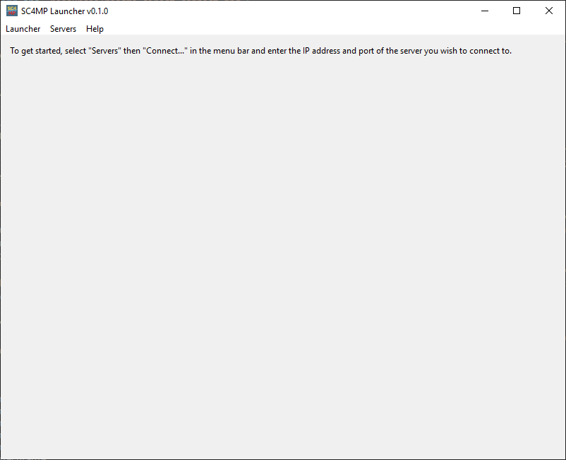
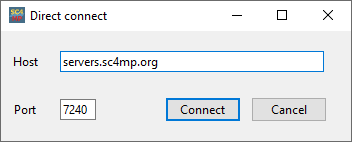
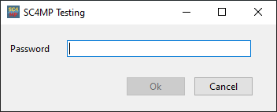
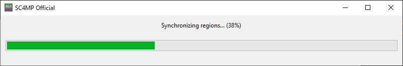
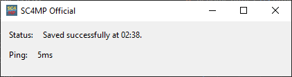
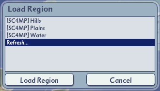
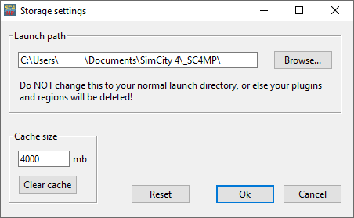
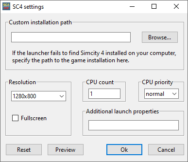
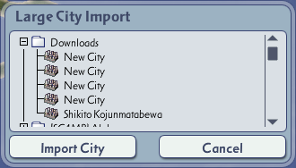

SC4MP Launcher
Readme • Version 0.3.1
Thank you for installing the SC4MP Launcher! This readme will help you get started with SC4MP. You can start playing Simcity 4 multiplayer in just a few steps.
Getting started
Run the launcher
Run the program titled "SC4MP Launcher" to start the launcher. The main window of the SC4MP Launcher will appear on-screen.
This window contains a server browser which displays the servers currently online. Each server has associated statistics. You can sort by any column by clicking on the column header. By default the servers are sorted by rating, which is calculated from the other server statistics.
Each server has a description, URL and address located in the lower-left corner of the server browser.
The servers can be filtered by a category or by search terms using the box on the lower-right corner.
You can refresh the listings by clicking the "Refresh" button.
Connect to a server from the server browser
Once you've selected the server you wish to connect to, click the "Connect" button or press enter.
Connect to a server from the direct connect window
If the desired server does not appear in the server browser, you can use the direct connect window. In the menu bar under "Servers" click "Connect..." or press F1 to open the direct connect window.
This window allows you to connect to a server by manually entering the hostname (ie. IP address) and port of a server. If you haven't connected to a server yet, the window will be configured to connect you to the official SC4MP server. Once you've entered in the hostname and port of the server you wish to connect to, click "Connect."
The loading sequence
Certain servers may prompt you for a password. The loading sequence will be cancelled after five failed password attempts.
If the launcher successfully establishes a connection to the server, it will begin downloading the server's plugins and regions. This loading sequence can be cancelled at any time by x-ing out of the window or pressing escape.
Once the loading sequence is complete, the server monitor will start alongside Simcity 4. This window will stay open until the game exits. It displays the result of the last save push and the ping (ie. response time) of the server. A lower ping means a better connection.

Playing in multiplayer
How claims work
SC4MP uses a claims system to protect cities from editing and to ensure that they are distributed fairly.
In this system, players can only save cities that they have previously claimed. Only unoccupied tiles or tiles with expired claims of other players can be claimed.
By default, claims expire after 30 days, but this can vary from server to server. By default, players are also limited to one claim per region, but this is also can vary from server to server.
Claims are linked to your automatically-generated, server-specific user id. User id's are stored on your computer locally, in your launch directory. This way you are never required to make an account to play on SC4MP, but you can only access your claims on another machine by migrating your launch directory manually.
Claiming a tile
To claim a tile, start a city and save your game. Ensure that the save push succeeded by monitoring for the result in the server monitor window. By default, you must first establish a city to claim the tile. This way, occupied tiles always appear as established cities with city names in the reigon view.
Playing in a claimed city
Once you have claimed your city, you can play in it and save it as usual. As long as you're still connected to the server, your saves will be pushed automatically.
Refreshing regions
To refresh regions, simply load the region titled "Refresh..."
The launcher will then initiate the refresh sequence automatically. Wait for this to complete before loading another region.
Refreshing regions will also ovverwrite your own cities, so ensure that your work has been saved to the server before refreshing.
Disconnecting
To disconnect from a server, simply exit the game. The server monitor will remain open for a few more seconds, but then the main window will subsequently re-open. You are able to then connect to another server seamlessly, without restarting the launcher.
Configuring the launcher
The launcher settings can be found in the menu bar under "Launcher" then "Settings." Each settings window contains a "reset" button that will reset the settings on screen to their default values.
General settings
The options in this window pertain to gameplay.

Custom plugins: Some servers allow players to load their own plugins alongside the server's plugins. Specify the path to your own plugins directory and check "Enable" to use custom plugins, and your plugins will be loaded with the server's plugins the next time you connect to a server. The directory you choose will not be altered in any way.
Storage settings
The settings in this window pertain to the files stored by the launcher on your disk.
Launch path: when the launcher downloads plugins and regions from a server, it writes to a special sandboxed folder. This prevents the launcher from interfering with your singleplayer plugins and regions. By default the launcher will write to a directory named "_SC4MP" in the "Simcity 4" directory in your documents.
If you want the launcher to write its files to another directory, specify it in this field. Do NOT set this path to your base Simcity 4 directory ("Documents\Simcity 4\")! Doing so will overwrite your singleplayer plugins and regions. Your server profiles are also stored in this directory, so you will also have to migrate those files manually if you change this directory. Unless you have a specific reason to do so, its best to not change this field.
Cache size: the launcher keeps a rolling cache of downloaded files in order to optimize loading times. A larger cache will allow for faster loading times on servers you've connected to previously, but will use more disk space. A smaller cache will use less disk space but can lead to longer loading times. Specify your desired cache size in megabytes in the field provided.
You can also clear your cache here by clicking the "clear cache" button.
SC4 settings
This window allows you to modify the launch parameters that the launcher uses when launching Simcity 4. You can test the settings by clicking the "preview" button and the game will launch without any plugins or regions.
Custom installation path: when attempting to launch Simcity 4, the launcher will look for the executable in the most common installation paths. If the launcher cannot find the game's install directory, you can provide a custom path to it.
You only need to set this value if the launcher asks for it.
Resolution: you can specify a custom game resolution using the field provided here, either by selecting one of the common resolutions provided or entering one manually.
You can also choose here whether to run the game in fullscreen or windowed mode. But keep in mind the server monitor may not be visible in fullscreen mode. A game overlay is planned for future versions of the launcher.
CPU count: since Simcity 4 was designed for older hardware than that available today, running the game with more than one CPU core can lead to crashes. Therefore, the SC4MP Launcher launches the game with one CPU core by default. A different CPU count however can be specified here.
CPU priority: this setting specifies the CPU priority level of the application when minimized.
Additional launch properties: this field allows you to manually specify more launch parameters if you wish to do so. A list of all launch parameters can be found here.
Recovering from server interruptions
The SC4MP Launcher is designed to recover from most temporary server outages, but in the event of a more severe outage, savegames can be recovered manually. Failed save pushes are saved to the "_Salvage" subdirectory of the launch directory. The launcher will automatically copy the savegames from the last failed save push into the region named "downloads" for importation in-game.
Advanced launch parameters
Some launch parameters are provided for advanced users. Their definitions can be found below:
"-no-ui" flag: this disables the ui and prompts the user to enter in the host, port and password (if required) of a server through the commandline, if not also specified through launch parameters.
"--host [hostname]" option: used to specify the hostname of a server to connect to immediately when starting the launcher.
"--port [port]" option: used to specify the port of a server to connect to.
"--password [password]" option: used to specify the password for a server (if required).
Issues
If you encounter a bug or error when using the SC4MP Launcher, create a ticket on GitHub.
Updates and more
The latest releases of the SC4MP Launcher can be found on GitHub.
Visit the official SC4MP website at sc4mp.org.
Credits
This readme was prepared for the SC4MP Launcher version 0.3.1.
View the full list of collaborators on GitHub.
Special thanks to Julian Cizmic, the original creator of PMR, the primary inspiration for SC4MP.